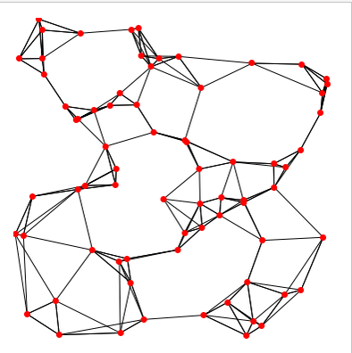
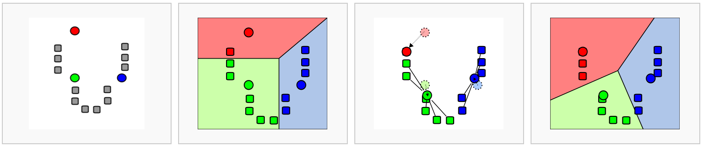
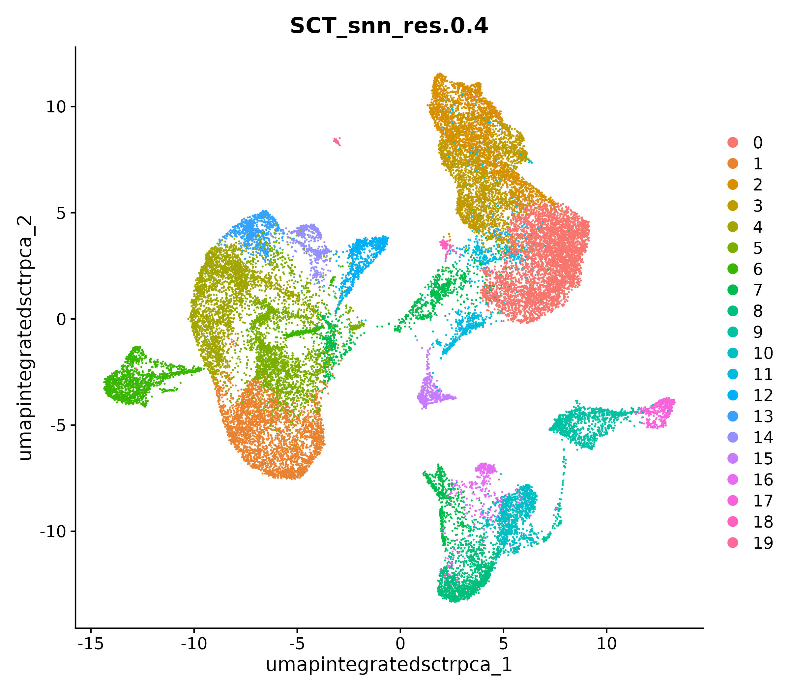
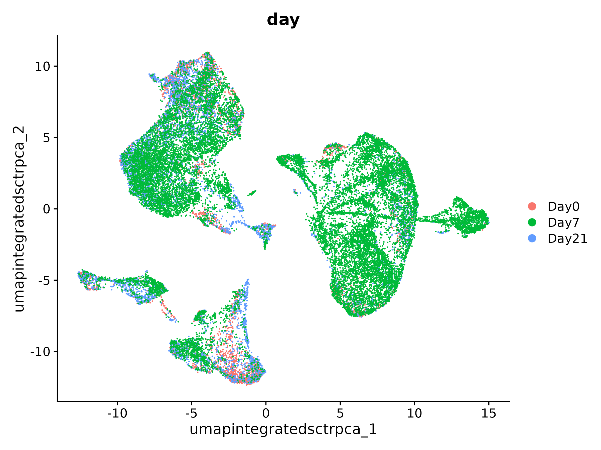
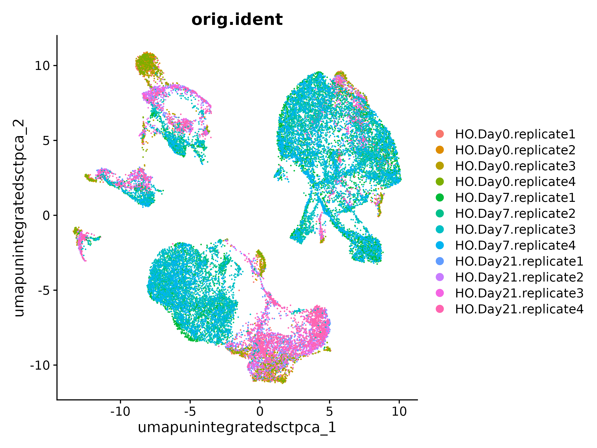

Workflow Overview

Introduction
One of our goals in a single-cell analysis is to generate clusters
that reasonably approximate cell-types or sub-types of interest in our
samples before determining if there are differences in the proportions
of these populations or differences in gene expression within these
populations between experimental conditions.
In this section, we will demonstrate how to generate clusters using
Seurat’s graph based clustering approach and visualizing those
clustering assignments via a lower dimensionality projection of the full
dataset.
Like other steps in our analysis, multiple parameters may need to be
tested and evaluated while we would expect that only the final would be
reported. Clustering is considered part of data exploration so an
iterative approach is reasonable and often expected source.
Objectives
- Understand the clustering process and input parameters
- Generate initial clusters and visualize the results
Clustering and projection
An important aspect of parameter selection for clustering is to
understand the “resolution” of the underlying biology and your
experimental design. Is answering your biological question dependent on
identifying rarer cell types or specific subtypes? Or are broader
cell-types more relevant to address your biological question?
The OSCA book has a helpful
analogy comparing clustering to microscopy and points out that
“asking for an unqualified “best” clustering is akin to asking for the
best magnification on a microscope without any context”.
We’ve already selected a number of PCs that we think are likely to
represent biological variation in our data while excluding technical
variability. Next, we’ll need to determine the “community” of cells
based on the selected PCs (and the corresponding gene expression) and
before selecting a resolution to use to divide those communities into
discrete clusters.
Clustering
Seurat uses a graph-based clustering approach to assign cells to
clusters using a distance metric based on the previously generated PCs,
with improvements based on work by (Xu
and Su 2015) and CyTOF data (Levine et
al. 2015 implemented in Seurat v3 and v5 and building on the initial
strategies for droplet based single cell technology Macosko et
al. 2015 source.
A key aspect of this process is that while the clusters are based on
similarity of expression between the cells, the clustering is based on
the selected PCs and therefore limited to the genes contributing to
those PCs.

KNN example - section on graph based clustering
(from Cambridge Bioinformatics course)
To briefly summarize, cells are embedded in a KNN graph (illustrated
above) based on “the euclidean distance in PCA space” between the cells
source
and the edge weights between any two cells (e.g. their “closeness”) is
refined based on Jaccard similarity.
Additional context and sources for graph-based clustering
Cambridge
Bioinformatics’ Analysis of single cell RNA-seq data course
materials, the source of the image above, delves into KNN and other
graph based clustering methods in much greater detail, including
outlining possible downsides for these methods. To described KNN, we
have also drawn from the Ho
Lab’s description of this process for Seurat v3 as well as the HBC
materials on clustering and the OSCA
book’s more general overview of graph based clustering, which also
describes the drawbacks for these methods.
This process is performed with the FindNeighbors command,
using the number of principal components we selected in the previous
section.
geo_so = FindNeighbors(geo_so, dims = 1:pcs, reduction = 'integrated.sct.rpca.clusters')
The second step is to iteratively partition the kNN graph into
“cliques” or clusters using the Louvain modularity optimization
algorithm (for the default parameters), with the “granularity” of the
clusters set by a resolution parameter source.

K-means clustering example (from Cambridge
Bioinformatics course)
We’ll use the FindClusters function,
selecting a resolution of 0.4 to start, although we could
also add other resolutions at this stage to look at in later steps.
geo_so = FindClusters(geo_so, resolution = 0.4, cluster.name = 'integrated.sct.rpca.clusters')
Note - Seurat’s FindClusters function is based on
algorithms described by Waltman
and Jan van Eck (2013)
Generally it’s preferable to err on the side of too many clusters, as
they can be combined manually in later steps. However, this is another
parameter that in our experience may need to be iteratively revised and
reviewed.
Resolution parameter recommendations
The Seurat
clustering tutorial recommends selecting a resolution between 0.4 -
1.2 for datasets of approximately 3k cells, while the HBC
course recommends 0.4-1.4 for 3k-5k cells. However, in our
experience reasonable starting resolutions can be very dataset
dependent.
Again, how a “cell type” or “subtype” should be defined for your data
is helpful to consider in selecting a resolution - we’d start with a
higher resolution for smaller/more rare clusters and a lower resolution
for larger/more general clusters.
If we look at our object after running these commands, we don’t see a
change.
geo_so
# An object of class Seurat
# 47037 features across 29615 samples within 2 assays
# Active assay: SCT (20548 features, 3000 variable features)
# 3 layers present: counts, data, scale.data
# 1 other assay present: RNA
# 3 dimensional reductions calculated: unintegrated.sct.pca, integrated.sct.rpca, umap.unintegrated.sct.pca
However, if we look at the meta data we can see that cluster labels
have now been added for each cell:
head(geo_so@meta.data)
# orig.ident nCount_RNA nFeature_RNA day replicate percent.mt nCount_SCT nFeature_SCT
HODay0replicate1_AAACCTGAGAGAACAG-1 HO.Day0.replicate1 10234 3226 Day0 replicate1 1.240962 6061 2865
HODay0replicate1_AAACCTGGTCATGCAT-1 HO.Day0.replicate1 3158 1499 Day0 replicate1 7.536415 4625 1510
HODay0replicate1_AAACCTGTCAGAGCTT-1 HO.Day0.replicate1 13464 4102 Day0 replicate1 3.112002 5426 2485
HODay0replicate1_AAACGGGAGGCCCGTT-1 HO.Day0.replicate1 1189 629 Day0 replicate1 3.700589 4165 919
HODay0replicate1_AAACGGGCAACTGGCC-1 HO.Day0.replicate1 7726 2602 Day0 replicate1 2.938131 5858 2585
HODay0replicate1_AAACGGGGTCCGAATT-1 HO.Day0.replicate1 5165 2362 Day0 replicate1 9.196515 5162 2348
# unintegrated.sct.clusters seurat_clusters integrated.sct.rpca.clusters SCT_snn_res.0.4 SCT_snn_res.0.8
HODay0replicate1_AAACCTGAGAGAACAG-1 4 8 2 2 8
HODay0replicate1_AAACCTGGTCATGCAT-1 4 8 2 2 8
HODay0replicate1_AAACCTGTCAGAGCTT-1 4 6 3 3 6
HODay0replicate1_AAACGGGAGGCCCGTT-1 4 2 2 2 2
HODay0replicate1_AAACGGGCAACTGGCC-1 4 8 2 2 8
HODay0replicate1_AAACGGGGTCCGAATT-1 11 9 8 8 9
Note - the example output has more resolutions represented than
is currently specified in the code above
Cluster plots
To visualize the cell clusters, we can use dimensionality reduction
techniques to visualize and explore our large, high dimensional dataset.
Two popular methods that are supported by Seurat are t-distributed
stochastic neighbor embedding (t-SNE) and Uniform Manifold Approximation
and Projection (UMAP) techniques. These techniques allow us to visualize
our high dimensional single-cell data in 2D space and see if cells
grouped together within graph-based clusters co-localize in these
representations source.
While we unfortunately don’t have time to compare and contrast tSNE,
and UMAP, we would highly recommend this blog post
contrasting tSNE and UMAP for illustrative examples. The Seurat
authors additionally caution that while these methods are useful for
data exploration, to avoid drawing biological conclusions solely based
on these visualizations source
To start this process, we’ll use the RunUMAP function to
calculate the UMAP reduction for our data. Notice how the previous
dimensionality choices carry through the downstream analysis and that
the number of PCs selected in the previous steps are included as an
argument.
geo_so = RunUMAP(geo_so, dims = 1:pcs, reduction = 'integrated.sct.pca', reduction.name = 'umap.integrated.sct.pca')
Visualizing and evaluating clustering
After we generate the UMAP reduction, we can then visualize the
results using the DimPlot function, labeling our plot by
the auto generated seurat_clusters that correspond to the
most recent clustering results generated:
post_integration_umap_plot_clusters = DimPlot(geo_so, group.by = 'seurat_clusters', label = FALSE, reduction = 'umap.integrated.sct.rpca')
ggsave(filename = 'results/figures/umap_integrated_sct_clusters.png', plot = post_integration_umap_plot_clusters, width = 8, height = 6, units = 'in')

At this stage, we want to determine if the clusters look fairly well
separated, if they seem to correspond to how cells are grouped in the
UMAP, and if the number of clusters are aligned with the resolution of
our biological question.
We can also look at the same UMAP, but labeling by day
instead of cluster:
post_integration_umap_plot_day = DimPlot(geo_so, group.by = 'day', label = FALSE, reduction = 'umap.integrated.sct.rpca')
ggsave(filename = 'results/figures/umap_integrated_sct_day.png', plot = post_integration_umap_plot_day)
A plot like this can tell us how much possible technical sources of
variation groupings might be driving or stratifying the clusters or if
we see good correction after the normalization and integration
steps.

We can also evaluate the number of cells per cluster using the
table() function, split by day:
table(geo_so@meta.data$day, geo_so@meta.data$integrated.sct.rpca.clusters)
# 0 1 2 3 4 5 6 7 8 9 10 11 12 13 14 15 16 17 18 19
Day0 65 240 843 317 167 36 36 125 778 132 125 305 55 29 159 133 56 141 37 19
Day7 3184 2497 972 1689 2037 2374 1596 929 108 548 566 382 627 686 309 97 262 86 14 36
Day21 1329 355 964 663 461 147 81 452 383 499 379 227 108 72 42 252 117 195 80 12
… or split by orig.ident e.g. by individual sample:
table(geo_so@meta.data$orig.ident, geo_so@meta.data$integrated.sct.rpca.clusters)
# 0 1 2 3 4 5 6 7 8 9 10 11 12 13 14 15 16 17 18 19
HO.Day0.replicate1 14 82 250 96 52 17 15 24 203 33 32 84 17 11 47 20 5 35 5 7
HO.Day0.replicate2 10 38 110 33 33 4 6 34 152 27 20 57 8 6 13 25 13 16 9 1
HO.Day0.replicate3 25 72 300 117 46 3 5 25 227 40 42 86 16 5 58 40 16 54 12 2
HO.Day0.replicate4 16 48 183 71 36 12 10 42 196 32 31 78 14 7 41 48 22 36 11 9
HO.Day7.replicate1 410 587 285 431 506 766 755 157 45 113 190 79 167 213 63 40 72 28 4 17
HO.Day7.replicate2 1156 616 184 361 580 468 220 372 7 158 135 126 180 160 86 19 88 12 1 3
HO.Day7.replicate3 887 722 377 592 534 395 90 241 48 178 146 110 163 164 93 27 72 36 8 14
HO.Day7.replicate4 731 572 126 305 417 745 531 159 8 99 95 67 117 149 67 11 30 10 1 2
HO.Day21.replicate1 338 96 317 221 144 40 30 139 115 145 110 73 35 14 13 65 26 56 20 3
HO.Day21.replicate2 168 69 189 86 82 25 12 106 113 78 48 40 15 14 6 51 29 29 17 5
HO.Day21.replicate3 184 72 168 93 91 26 8 62 100 90 69 34 16 20 7 55 20 39 9 3
HO.Day21.replicate4 639 118 290 263 144 56 31 145 55 186 152 80 42 24 16 81 42 71 34 1
Comparing to unintegrated data
If we had proceeded with our filtered data and only normalized our
data without doing any integration, including through the dimensionality
reduction and clustering steps and then labeled the cells with their
sample of origin, then we would see the following for our data:

If we instead labeled our plot by day, then we would
see: 
In this plot, we see that while there are distinct clusters, those
clusters seem to stratified by day. This suggests that without
integration, these batch effects could skew the biological variability
in our data.
Rewind: Pre-integration evaluation clustering and
visualization
Prior to integration, could follow the same steps we’ve just run for
the integrated to see if the resulting clusters tend to be determined by
sample or condition (in this case, the day):
# DefaultAssay(geo_so) = 'RNA'
geo_so = RunPCA(geo_so, reduction.name = 'unintegrated.sct.pca')
geo_so = FindNeighbors(geo_so, dims = 1:25, reduction = 'unintegrated.sct.pca')
geo_so = FindClusters(geo_so, resolution = 0.4, cluster.name = 'unintegrated.sct.clusters')
geo_so = RunUMAP(geo_so, dims = 1:25, reduction = 'unintegrated.sct.pca', reduction.name = 'umap.unintegrated.sct.pca')
From this image, we can qualitatively see that some clusters seem to
be driven by the original identity. We can see this even more clearly if
we use group.by = 'day':
pre_integration_umap_plot = DimPlot(geo_so, group.by = 'day', label = FALSE, reduction = 'umap.unintegrated.sct.pca') + NoLegend()
ggsave(filename = 'ISC_R/results/figures/umap_unintegrated_sct_day.png', plot = pre_integration_umap_plot)
```
```r
pre_post_integration_plot = pre_integration_umap_plot_day | post_integration_umap_plot_day
ggsave(filename = 'results/figures/umap_comparison_sct.png', plot = pre_post_integration_plot, width = 12, height = 6, units = 'in')
```
</details>
<br>
<br>
<br>
<details>
<summary>**Alternative clustering resolutions**</summary>
While we show a single resolution, we can generate and plot multiple resolutions iteratively and compare between them before selecting a clustering result for the next steps:
```r
resolutions = c(0.4, 0.8)
# seq(from = 0.1, to = 1, by = 0.1)
for(res in resolutions) {
message(res)
cluster_column = sprintf('SCT_snn_res.%s', res)
umap_file = sprintf('results/figures/umap_integrated_sct_%s.png', res)
geo_so = FindClusters(geo_so, resolution = res)
DimPlot(geo_so, group.by = cluster_column, label = FALSE, reduction = 'umap.integrated.sct.rpca')
ggsave(filename = umap_file, width = 8, height = 7, units = 'in')
}
```
If we look at the results... :
```r
head(geo_so@meta.data)
```
... multiple resolutions should now be added to the metadata slot.
</details>
<br>
## Save our progress
Before moving on to our next section, we will output our updated Seurat object to file:
```r
saveRDS(object = geo_so, file = 'results/rdata/geo_so_sct_clustered.rda')
Summary
In this section we:
- Generated cluster assignments for our cells using
FindNeighbors and FindClusters
- Evaluated our initial clusters using
RunUMAP
dimensional reduction and visualization
Next steps: Marker genes
These materials have been adapted and extended from materials listed
above. These are open access materials distributed under the terms of
the Creative
Commons Attribution license (CC BY 4.0), which permits unrestricted
use, distribution, and reproduction in any medium, provided the original
author and source are credited.
